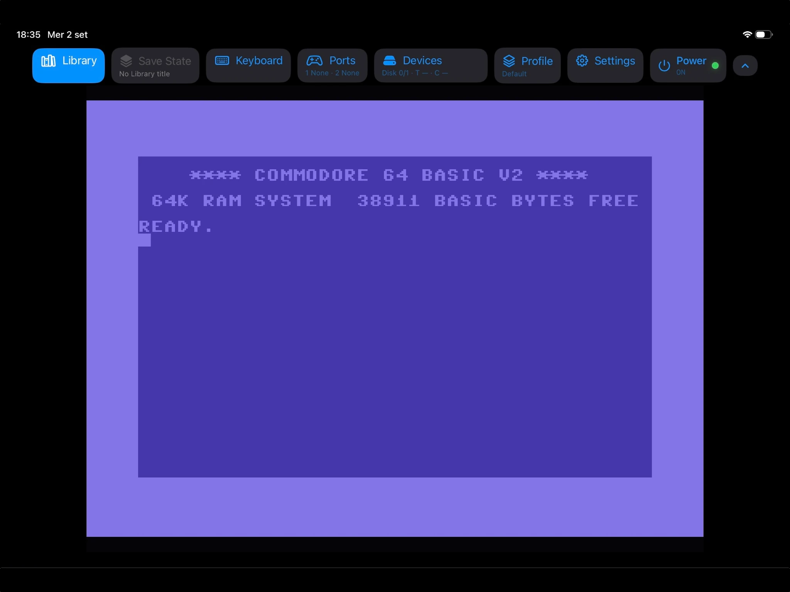
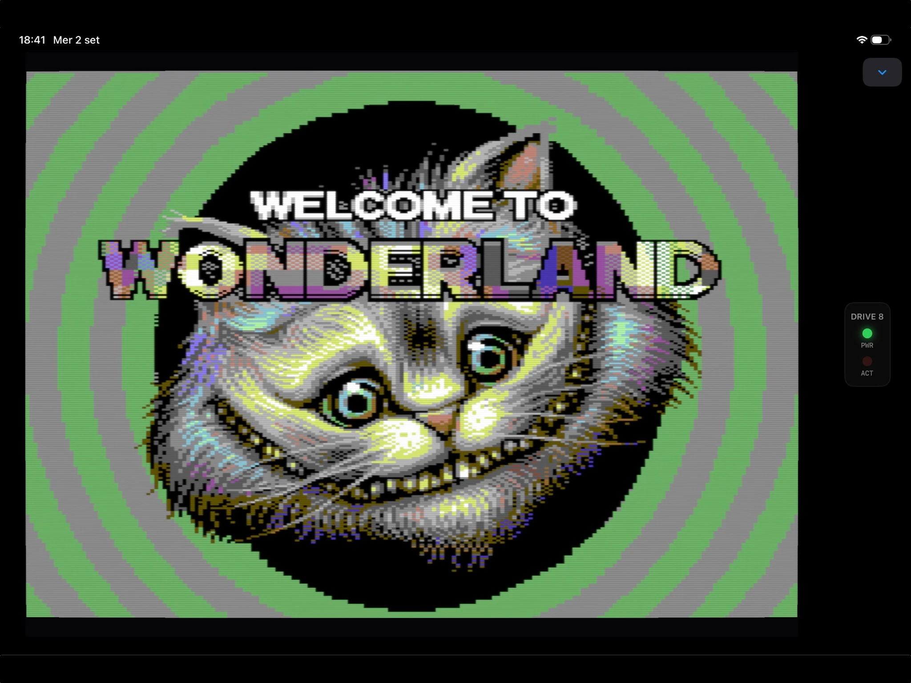
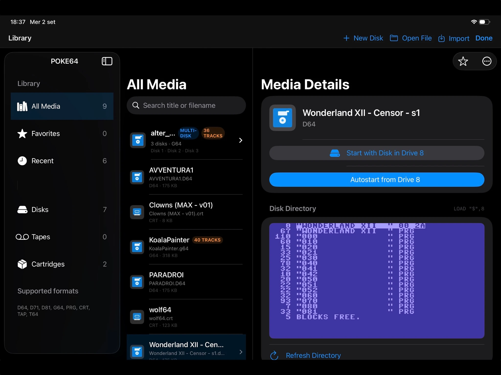
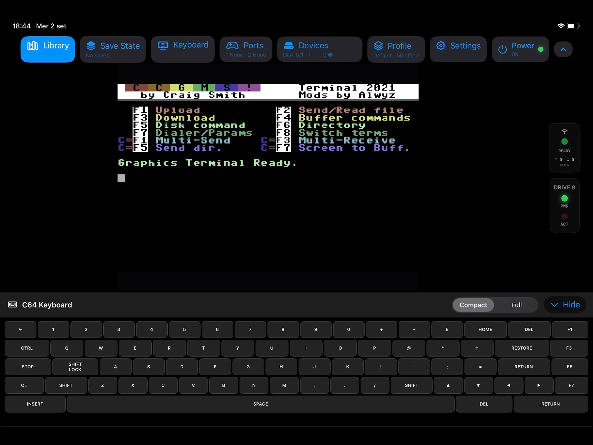
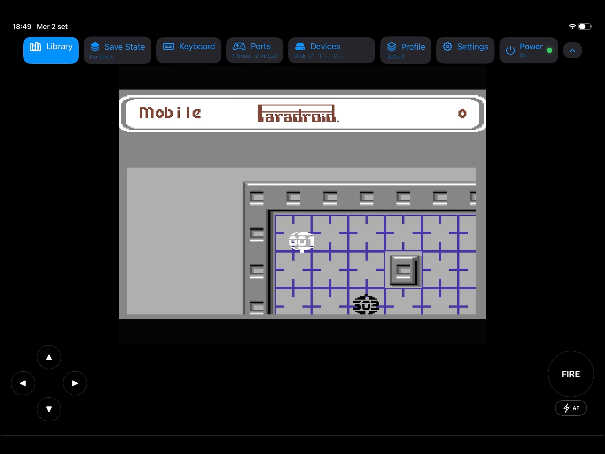
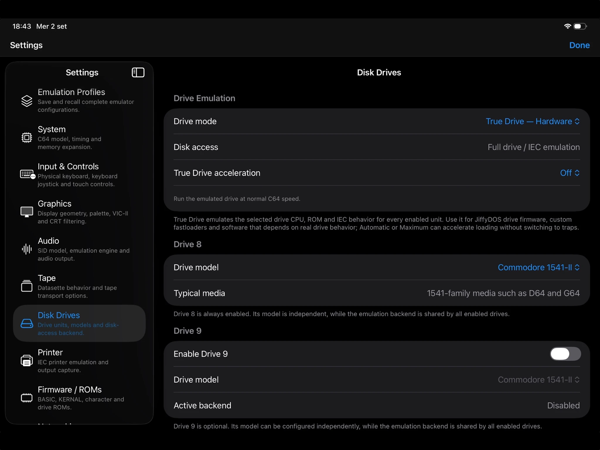

Fast or accurate disk I/O
Use VICE Virtual Device Traps for near-instant compatible disk access, or full True Drive emulation when software needs the real drive behavior.
POKE64 combines VICE-based C64 emulation with an interface designed around touch, external controllers, modern media management and the expanded hardware people actually used.
Version 1.0.2 is awaiting Apple review. The currently approved version is available on the App Store. Commodore ROMs, firmware and commercial game images are not bundled.

From launching classic software to exploring disk images and fine-tuning emulated hardware, these are actual screenshots from POKE64.





POKE64 exposes the machine, its drives and its expansions without forcing a desktop emulator UI onto a tablet.
Use VICE Virtual Device Traps for near-instant compatible disk access, or full True Drive emulation when software needs the real drive behavior.
Configure REU memory up to 16 MB for software such as GEOS, modern productivity environments and REU-aware utilities.
Select an additional SID address from the options exposed by VICE and use ReSID or ReSID-FP for high-quality audio emulation.
Organize disks, tapes, cartridges and programs with artwork, per-title launch profiles and detailed media inspection, including raw-GCR G64 structure analysis.
Use joystick, keyboard and mouse input alongside virtual Paddles and KoalaPad controls, including Apple Pencil support.
Drives, REU, printer, Virtual Hayes modem and classic control-port devices are surfaced directly in the iPad interface.
POKE64 adapts its canvas, toolbar, keyboard and peripheral panels to iPad orientation instead of treating portrait as an afterthought.
The emulation core stays focused on compatibility; POKE64 handles the native Apple-platform experience around it.
Version 1.0.2 has been submitted for App Store review. It focuses on compatibility, usability and everyday reliability.
Pending Apple approval · The App Store link opens the currently available version.
Explore the public source repository, licensing information, and the project’s ongoing development. POKE64 is built on the open-source VICE emulator.